Focused drone-command game concept · v3 · Oct 1, 2026 for Richard Bailey · follow-up to game-concepts.html · brainstorm only · changelog at the bottom
direction-lock.md first."lets focus better. less about whole civ development and complex details. most about assigning activities, roles, behaviour. deploying types of drones, including air and ground versions and capabilities. can research evolution of drone tech as seen in russia ukraine war. achieving goals unlocks more advanced drone tech etc. what are some good comparison example games."
"more open map with fog of war and less like isometric grid like into the breach. regarding scale, timeline can follow russian ukraine war as a pattern. the drone attack counts per day are published. it gives a guide for how early play starts off with a few in numbers and type and it expands over time."
Every drone you field teaches the enemy what to jam next.
You command a drone detachment on an open, fog-covered fictional front. It starts as three commercial quadcopters and grows, chapter by chapter, into hundreds of air and ground drones, following the published scale curve of the 2022–2026 drone war. You don't build a base. Each mission you pick a loadout from a supply budget, give every flight a role card and a few if-then behavior rules, and run the mission in real time with pause. You only see what your sensors see. Scouts, relays, ground masts, and night thermal sensors push back the fog, but only while their links hold. When a jammer bites, orders stop arriving, that patch of map goes dark, and drones fall back on the last order you gave them. Completing objectives earns Lessons that unlock the next generation of drone technology, and the enemy adapts to whatever you lean on. As your numbers grow and your command tokens don't, the game forces you to stop steering drones and start writing doctrine. It is told abstractly, with no real places, units, or people.
| Richard asked for | Design answer |
|---|---|
| Less civ-building, fewer complex details | No base and no economy. The only resource is a supply budget per mission, and nothing carries between missions except unlocked tech. |
| Assigning activities, roles, behavior | Role cards plus 1–3 gambit-style if-then rules per flight, including a required rule for what to do when the link is lost. |
| Deploying types of drones, air and ground, with capabilities | A 14-unit roster (7 air, 7 ground) with six clear stats: range, endurance, payload, signature, jam resistance, and cost. |
| Tech evolution as seen in the Russia–Ukraine war | 11 tech tiers in 5 eras, each tied to a cited real-world development. |
| Achieving goals unlocks more advanced tech | Objectives earn Lessons. Some tech only becomes researchable after the enemy fields the counter it answers. |
| Open map with fog of war, not an isometric grid (v2) | A continuous top-down map, run in real time with pause. Fog comes from sensors (scouts, relays, ground masts, thermal at night) and depends on comms links. Enemy contacts leave fading last-known ghosts, comms and jam bubbles are drawn on the map, and terrain blocks both links and sight. |
| Scale follows the Russia–Ukraine war timeline (v2) | Six chapters track published counts: 3–5 Mavic-class drones in Chapter 1 (2022), rising to 150–250 mixed air and ground units in Chapter 6 (2026). Enemy waves are scaled from Ukrainian Air Force daily launch reports. |
| Comparison games | 12 open-map and fog comparisons plus 6 behavior and progression references, all verified. 15 of them now have a 'what to look for' note, a timestamped gameplay link, and a still frame (see the end). |
Countermeasure is played on a continuous map, not a grid. The fog of war is the comms model made visible.
Ratings run 1–5 (5 = most). Signature means noise and visibility, so higher is worse. Cost is supply points.
| Unit | Domain | Unlock | Roles | Range | Endur. | Payload | Signature | Jam resist | Cost | Reusable | Special |
|---|---|---|---|---|---|---|---|---|---|---|---|
| Scout Quad | Air | T1 | Scout, Spot | 3 | 3 | 0 | 2 | 1 | 1 | Yes | Marks targets and reveals jam zones. Feeds the off-map Fire Support card. |
| Dropper Quad | Air | T2 | Strike (light), Resupply (tiny) | 2 | 3 | 1 | 3 | 1 | 2 | Yes | Precise drop, but must hover over the target, which makes it vulnerable. |
| FPV Striker | Air | T3 | Strike | 2 | 1 | 1 | 2 | 1 | 1 | No | Fast and cheap. Needs a live link for its final approach until T10 autonomy. |
| Night Heavy | Air | T5 | Strike, Resupply, Relay (module) | 3 | 3 | 4 | 5 | 3 | 4 | Yes | Thermal camera. Strong at night, exposed by day, loud. Returns home automatically when the link is lost. |
| Relay Wing | Air | T6 | Relay, Mothership | 5 | 5 | 2 (carries 2 FPV) | 3 | 3 | 4 | Yes | Extends the comms bubble and launches FPVs from far forward. |
| Interceptor | Air | T7 | Intercept, Escort | 3 | 1 | 0 | 2 | 2 | 2 | No | Hunts enemy recon and strike drones. Can escort a flight. |
| Tethered FPV | Air | T9 | Strike, Scout (low level) | 2 (spool) | 1 | 1 | 1 | 5 (immune) | 3 | No | Can't be jammed. Slower, and the cable snags on trees and structures. |
| Mule UGV | Ground | T8 | Resupply | 3 | 5 | 5 (cargo) | 2 | 3 | 2 | Yes | Slow and limited by terrain. Uses multiple control channels. |
| Medevac UGV | Ground | T8 | Recover | 3 | 4 | 3 (crew pod) | 3 | 3 | 2 | Yes | Brings stranded crew pods back to friendly lines. |
| Sapper UGV | Ground | T8 | Obstacle (lay or clear) | 2 | 3 | 3 | 3 | 3 | 3 | Yes | Opens or closes routes. Clears minefields and lays barriers. |
| Sentry UGV | Ground | T8 | Hold, Escort | 2 | 5 | 3 (mount) | 3 | 3 | 3 | Yes | Holds a point for a long time. Very hard to dislodge. |
| Relay Mast UGV | Ground | T6 | Relay | 2 | 5 (parked) | 0 | 4 (when transmitting) | 3 | 2 | Yes | Drives to a spot, then deploys as a ground repeater. |
| Jammer UGV | Ground | T4 | Jam | 2 | 3 | 0 | 5 (emitter) | n/a | 3 | Yes | Its jam bubble blocks enemy radio drones, and yours too (friendly fire). |
| Carrier UGV | Ground | T11 | Mothership | 2 | 4 | 3 (2 FPV or 2 Interceptors) | 3 | 3 | 5 | Yes | A ground mothership that launches small drones from inside the kill zone. |
Off-map card: Fire Support (T1). A Spot-role drone holds over a target for 10 seconds, then abstract off-map fire resolves.
A drone only accepts roles it can perform.
Priority-ordered, limited by slots: 1 at the start (the Link-Lost rule is required), +1 at T4, and +1 at T10.
| If you... | ...the enemy answers with |
|---|---|
| You lean on radio FPVs | Enemy adds point-jammer bubbles, then wideband area jammers. |
| You lean on Fiber | Enemy nets your routes and adds kinetic counter-drone posts and interceptors. |
| You lean on Night Heavies | Enemy adds thermal spotters and night air defense around nodes. |
| You lean on UGV convoys | Enemy mines tracks and runs FPV hunter patrols on roads. |
| You lean on Relays | Enemy interceptors target relays first, which collapses your bubble. |
| You transmit a lot | Enemy direction-finding hunts your Operator Post. |
The real-world anchors are summarized from the cited sources and kept at the level of capability and counter-capability only. The game counter column is a design choice, not a factual claim.
| Era | Tier | When | Name | Real-war anchor | Unlocks in game | Game counter (design) | Sources |
|---|---|---|---|---|---|---|---|
| I · Off-the-shelf | T1 | 2022 | Eyes in the sky | Commercial DJI Mavic-class quadcopters were used by both sides for reconnaissance and artillery correction. RFE/RL also reports DJI's Aeroscope detection system being used to locate drone operators. | Scout Quad, Fire Support card (spot, then off-map fire) | Enemy direction-finding: transmitting too much reveals your Operator Post. | RFE/RL CNA (2022) |
| I · Off-the-shelf | T2 | 2022 | Improvised droppers | Commercial and hobby drones were adapted to drop small improvised munitions, so cheap payloads could disable far more expensive vehicles. | Dropper Quad | Enemy adds overhead cover (canopy and netting) that reduces drop effectiveness. | Modern War Institute (West Point) RFE/RL |
| II · FPV & EW | T3 | 2023 | FPV mass | Cheap FPV kamikaze drones went into volume production. Unlike a Mavic, they take real piloting skill and a live video link. | FPV Striker | Enemy fields jammers (unlocks the EW era). | Forbes / D. Hambling (May 2023) |
| II · FPV & EW | T4 | 2023–24 | The EW wall | RUSI estimated Ukraine was losing about 10,000 drones a month, largely to Russian electronic warfare (May 2023). CSIS describes local jam 'bubbles' of roughly 200–300 m alongside long-range jamming, frequency-switching data links as a counter, and friendly jamming that interferes with a side's own drones. | Frequency-Agile radio module, Jammer UGV, +1 behavior-rule slot | Two enemy jammer types: point bubbles around valuable targets and wideband area jammers that defeat frequency hopping. | RUSI 'Meatgrinder' (May 2023) CSIS (Mar 2025) |
| III · Heavies, relays, interceptors | T5 | 2023–24 | Night heavies | Heavy multirotor 'Baba Yaga' bombers such as Vampire fly mostly at night with thermal cameras. Ukraine's MoD cites payloads up to 15 kg, about 20 km range, EW resistance, and automatic return on signal loss. | Night Heavy | Enemy adds night thermal spotters and short-range air defense around high-value nodes. | Ukraine MoD Forbes / D. Axe (Dec 2023) |
| III · Heavies, relays, interceptors | T6 | 2024 | Relays & motherships | Fixed-wing 'motherships' carry FPVs forward and act as signal relays. Ukraine's Dovbush T10 was reported carrying up to six FPVs (Nov 2024), and Russia's Pchelka was reported earlier. | Relay Wing, Relay Mast UGV | Enemy interceptors start prioritizing your relays. | The War Zone (Nov 2024) |
| III · Heavies, relays, interceptors | T7 | 2024–25 | Drone vs. drone | Interceptor drones spent at least a year downing Russian recon drones (Zala, Orlan) before shifting to Shahed defense in 2025. They cost roughly $2k–5k, versus $40k–100k for surface-to-air missiles. | Interceptor | Enemy escorts its recon drones and starts flying interceptors against yours. | Kyiv Independent (Jul 2025) |
| IV · Robots & fiber | T8 | Dec 2024–25 | Ground robots | In December 2024 near Lyptsi, Ukraine ran its first all-unmanned operation: dozens of UGVs plus FPVs, no infantry, all still remotely operated. By mid-2025, logistics and casualty evacuation were the most mature UGV roles, and some models used multiple control channels to cope with EW. | Mule, Medevac, Sapper, and Sentry UGVs | Enemy mines tracks and puts FPV hunter patrols on roads. | CSIS (Mar 2025) Kyiv Independent (Jul 2025) |
| IV · Robots & fiber | T9 | late 2024–25 | Fiber-optic FPVs | FPVs controlled over a spooled fiber-optic cable can't be jammed. They are slower, and the cable can tangle in trees. Russia fielded them first at scale. | Tethered FPV | Enemy nets routes and switches to kinetic counters (interceptors, guns), since jamming no longer works. | BBC (May 2025) The Guardian (Apr 2025) |
| V · Autonomy & kill zone | T10 | 2025 | Last-mile autonomy | CSIS reports onboard terminal guidance raising strike success from about 10–20% to about 70–80% (per interviewees). A human still confirms the target, and a 'cruise control' mode carries a drone through jammed airspace. | Autonomy chips (Lock-on, Cruise-through-jam), +1 rule slot, the 'Self-guide' Link-Lost option | Enemy decoys and camouflage: autonomy can lock onto the wrong thing. | CSIS (Mar 2025) |
| V · Autonomy & kill zone | T11 | 2025–26 | Kill zone & multi-domain motherships | By mid-2025, fiber-optic drones and interceptors had made the front a drone 'kill zone' (Reuters). By 2026, the Guardian reports ground robots handling about 90% of Ukrainian army logistics, and Business Insider reports motherships on boats, ground robots, and aircraft launching FPVs and interceptors. | Carrier UGV, robot convoys, saturation-defense missions | Endgame: enemy saturation waves plus full-spectrum counters. Only mixed doctrine survives. | Reuters (Jul 2025) The Guardian (Apr 2026) Business Insider (Jul 2026) |
Ukraine's Air Force publishes daily counts of Russian long-range attack drones, and governments and analysts publish yearly production and monthly usage figures. Together they give a pacing guide: the war started with a handful of commercial quadcopters and grew to hundreds of launches a night and millions of drones a year. The campaign borrows that shape, scaled down hard.
Log scale. Real series use the figures in the table below (the 2022 Shahed point is about 223 over 5 weeks, and 2023 is derived from a cumulative total). July 2026 uses the AF overnight count of 4,891 (the MoD counted 8,653). Game lines are chapter midpoints from the chapter table.
Labels: Official means government figures (Ukrainian AF, MoD, NSDC), Estimate means analyst estimates, and Claim means an interested party's unverified statement. Shahed-type counts are nationwide long-range strikes, not a single front-line sector.
| Period | Figure | Type | Source | Label |
|---|---|---|---|---|
| Sep 13 – Oct 19, 2022 | 223 shot down in about 5 weeks (roughly 6 a day); 43 on Oct 17 alone | Shahed-136/Geran-2 long-range one-way attack drones | Kyiv Independent | Official (Ukrainian AF figures) |
| 2022 → 2024 (front line, both sides) | Tens of thousands of drones used per month in 2022, rising to hundreds of thousands per month in 2024 | All types, mostly small quadcopters and FPVs | RUSI (Nov 2025) | Estimate |
| May 2023 | Ukraine losing about 10,000 drones a month, mostly to EW | Small tactical drones | RUSI 'Meatgrinder' | Estimate |
| War start → Dec 21, 2023 | About 3,700 Shaheds launched in total, which works out to roughly 250–300 a month in 2023 (my derivation) | Shahed/Geran | Reuters | Official total; the monthly rate is my estimate |
| Jul 2024 | 423 in the month (about 14 a day) | Shahed/Geran | Kyiv Independent | Official (AF; spokesman calls the figures approximate) |
| Aug / Sep / Oct 2024 | 785 / 1,339 / 1,930 a month | Shahed/Geran | Centre for Information Resilience | Official (AF data compiled) |
| Nov 2024 | More than 2,500 in the month (about 83 a day) | Shahed/Geran | Kyiv Independent | Official (AF) |
| Sep 2024 → Mar 2025 | About 200 a week rising to more than 1,000 a week; Russia tolerated loss rates above 75% | Shahed/Geran | CSIS | Analysis of official data |
| 2025, monthly | Jan 2,629 · Feb 3,904 · Mar 4,198 · Apr 2,422 · May 4,003 · Jun 5,438 · Jul 6,297 · Aug 4,128 · Sep 5,643 · Oct 5,298 · Nov 5,447 · Dec 5,131. Total 54,538 (about 150 a day) | Shahed-type, decoys included | Institute for Science and International Security (ISIS) | Official (AF reports compiled); other outlets differ by about 3% for some months |
| Jul 9, 2025 | 728 in one night | Shahed-type plus decoys | Kyiv Independent | Official (AF) |
| Sep 7, 2025 | 810 in one night, the record at the time (about half of them decoys) | Shahed-type plus decoys | AP | Official (AF); Reuters reported 805 |
| 2026, monthly | Jan 4,442 · Feb 5,059 · Mar 6,462 · Apr 6,583 · May 8,161 (record month, about 263 a day) · Jun 5,749 (about 192 a day) | Shahed-type, decoys included | ISIS | Official (AF reports compiled) |
| Mar 23–24, 2026 | 948 in 24 hours (6 PM to 6 PM), the largest single day so far | Shahed-type | ISIS | Official (AF reports compiled) |
| Jul 2026 | 4,891 in AF overnight reports, versus 8,653 strike drones counted by Ukraine's MoD including daytime waves | Shahed-type | ISIS (Jul 2026 PDF) | Official, but the two official counts disagree |
| Aug 2026 | 5,166 published-source baseline, with ISIS estimating 4,800–5,300 genuine Shahed/Geran drones | Shahed-type | ISIS (Aug 2026 PDF) | Official baseline plus estimate |
| Ukraine production, 2022 / 2023 / 2024 | 1,200 / 415,030 / about 1.7M (procurement data, excluding volunteer supply) | All Ukrainian-made UAV types | Interfax-Ukraine (StateWatch) | Official procurement data, an undercount |
| Ukraine production, 2024 | 2.2M FPVs plus 100k long-range | FPV and long-range | Censor.net (Zelensky) | Official claim |
| Ukraine deliveries, 2025 | 3M FPVs delivered to the Armed Forces (about 2.5× 2024) and nearly 15,000 ground robots | FPV and UGV | ArmyInform (Shmyhal) | Official |
| Ukraine, 2026 | Production capacity above 8M FPVs a year (NSDC). Reuters reports Ukraine expects 6–7M FPVs in 2026 | FPV | NSDC; Reuters (Jul 2026) | Official claim and expectation |
| 2025, front-line results | 819,737 video-confirmed hits across all target types (about 68,000 a month) under the Army of Drones Bonus scheme | Mostly FPV and bomber drones | Ukraine MoD | Official claim |
| Jan 2026 | About 7,000 ground-robot operations in the month, with robots reported to handle about 90% of army logistics | UGV | The Guardian (Apr 2026) | Reported (citing Ukrainian officials) |
| Early Jul 2022 (cumulative) | More than 1,400 Ukrainian drones claimed shot down | Ukrainian UAVs, all types | CNA (citing Russian MoD) | Russian MoD claim |
| Oct 6, 2025 | 251 Ukrainian drones claimed shot down overnight | Ukrainian long-range UAVs | France 24 | Russian MoD claim |
| Sep 19–20, 2026 | 1,110 Ukrainian drones claimed shot down, in Ukraine's largest attack on Russia (450 of them toward Moscow) | Ukrainian long-range UAVs | CBS News | Russian MoD claim |
| Ch | Name | War period | Tiers | Your drones / mission | Enemy scale / mission | Unlocks | What you command | Drones per command token |
|---|---|---|---|---|---|---|---|---|
| 1 | Eyes in the Sky | 2022 | T1–T2 | 3–5 (floor; mostly Mavic-class Scout Quads, plus a Dropper) | 1–3 enemy recon drones; raids of about 2 | Scout Quad, Dropper Quad, Fire Support card | Individual drones (direct waypoints are fine) | ~1.5 |
| 2 | FPV Mass & the EW Wall | 2023 | T3–T4 | 8–12 | Waves of about 3; the first jammer bubbles | FPV Striker, Frequency-Agile module, Jammer UGV, +1 rule slot | Flights of 3–4 with a role card and rules | ~3–4 |
| 3 | Night Heavies & Relays | Jan–Aug 2024 | T5–T6 | 25–45 | Waves of 4–8; enemy night thermal spotters | Night Heavy, Relay Wing, Relay Mast UGV, night missions | Flights plus 2 rules; relays become mandatory | ~10–15 |
| 4 | Drone vs. Drone | Sep 2024 – Mar 2025 | T7–T8 | 45–75 | Waves of 15–45; first saturation-defense missions | Interceptor; Mule, Medevac, Sapper, and Sentry UGVs; doctrine templates | Squadron templates (one role and rule bundle stamped onto many flights) | ~15–25 |
| 5 | Fiber & Autonomy | Apr–Dec 2025 | T9–T10 | 75–110 | Waves of 25–70; a record-night set piece of about 270 | Tethered FPV, autonomy chips, +1 rule slot, standing sector orders | Sectors with standing orders; autonomy handles the last mile | ~25–35 |
| 6 | Kill Zone & Motherships | 2026 | T11 | 150–250 mixed air and ground | Waves of 45–90; a finale of about 315 | Carrier UGV, robot convoys, group-of-groups command, exception alerts | Battle group: you set zones and priorities and handle exceptions | ~50–80 |
Supply 110 · about 54 drones in 9 flights · 3 command tokens
An area jammer of unknown radius sits somewhere around the ford. A ghost from 4-minute-old intel marks an enemy recon drone over the valley, and anything it spots draws enemy hunter FPVs about 30 seconds later (Chapter 4 scale: waves of about 15–25). The main road is mined, and the forest track is slow but sits in the ridge's sensor shadow. Dusk turns to night at 4:00.
| Flight (cost) | Role · rules |
|---|---|
| Mule Convoy A: 6× Mule UGV (12) | Resupply · forest track · IF link LOST → Continue last order · IF enemy drone spotted → Halt under cover |
| Mule Convoy B: 6× Mule UGV (12) | Resupply · river track · same rules (one doctrine template stamped onto both convoys) |
| Relay Group: 2× Relay Wing + 2× Relay Mast UGV (12) | Relay · Wings orbit the east ridge, Masts park on Hill 2 (LOS preview checked) · IF link DEGRADED → Climb |
| Escort Screen: 8× Interceptor (16) | Escort the convoys · IF enemy drone spotted → Engage |
| Scout Picket: 8× Scout Quad (8) | Scout · fan out across the valley as a sensor picket · IF link LOST → Return home |
| Night Strike: 4× Night Heavy (16) | Strike the jammer node once spotted · IF night → Activate · Link-Lost: auto-return (built in) |
| Sapper Team: 4× Sapper UGV (12) | Obstacle-clear the main road to open a faster route |
| FPV Reserve: 12× FPV Striker (12) | Hold at the launch point · Strike on a Scout mark |
| Outpost Guard: 2× Sentry UGV (6) | Hold Outpost Kestrel |
| Time | Beat |
|---|---|
| 0:00 | Paused at the start. Only your comms bubble is lit, and everything else is fog. You lock the plan and unpause. |
| 0:30 | The Scout Picket fans out and the fog peels back in camera cones. A Relay Mast drives toward Hill 2, and its line-of-sight preview shows the ridge shadow over the forest track. |
| 1:00 | Two Scouts over the ford go Degraded, their feeds lag, and then they go Lost. A red link-loss arc appears: the edge of the unseen jammer bubble, inferred from where they dropped. |
| 1:20 | Convoy A rolls into the bubble and goes Lost. Its six icons turn into ghosts of your own drones, so you know where they were, not where they are. They keep driving on their last order. This is the vignette's last-order moment. |
| 1:40 | The enemy recon drone crosses a Scout cone, then leaves it, and becomes a ghost with a widening circle. When it reappears near Convoy B, the Escort Screen engages per its rule. About 18 hunter FPVs follow 30 seconds later, and the screen trades 5 Interceptors to break the wave. |
| 2:30 | The Relay Wings climb and restore Degraded links over half the valley. You spend a token to reroute Convoy B around a crater you can only see on a stale feed. |
| 4:00 | Night falls. Daylight cones shrink and the Night Heavies' thermal coverage grows. They find the jammer node and disable it. Links snap back to Clear, the ghosts resolve, and Convoy A is where you hoped. Two of its Mules halted under cover per their rule. |
| 9:40 | Two deliveries are in. The Sappers clear the road and the third delivery arrives at 11:20. Optional A fails because you didn't bring a Medevac, which was the trade-off. |
| Debrief | The link-loss heat map shows the jammer's real radius against your guess. The timeline flags 'Order #4: reroute Convoy A. NOT DELIVERED (link lost 1:21).' Grade: B, 3 Lessons. Adaptation: the enemy noticed your convoys, so the next mission adds track mines and more hunters. Unlock offered: Tethered FPV, because the area jammer beat your frequency-agile radios. |
Fixed loadouts and hand-made maps. You're scored on objectives, live orders used, and drones still in contact, with Opus Magnum-style histograms. It reuses the vignette's agent model, jam toggle, and replay strip almost as-is.
One player builds the loadout and rules. The other spends a counter budget from the same era: jammers, nets, interceptors, decoys, mines. Both watch a shared, fog-free after-action replay.
Browser-first, as a 2D top-down canvas. Its agent model, jam sector, link states, and replay strip can be lifted from the existing Dronscape vignette. Fog can be rendered as an offscreen coverage mask, and a few hundred simple agents is well within canvas limits. A full six-chapter campaign with around 25 missions is a solid indie scope. Variant A alone, at Chapter 1–2 scale, is the cheapest slice.
Each game now has a What to look for note, a timestamped gameplay link that opens at the moment showing that mechanic, a still frame from that moment (files in clips/), and the official trailer as a secondary link. I checked every timestamp by downloading that part of the video on the box and looking at the frames at that second. I also checked every YouTube link on Oct 1, 2026 with YouTube's oEmbed endpoint, which returned the title and channel shown. No links or timestamps were invented. Three references (Men of War II, Gratuitous Space Battles 2, Duskers) weren't in this clip pass and keep only their trailer.
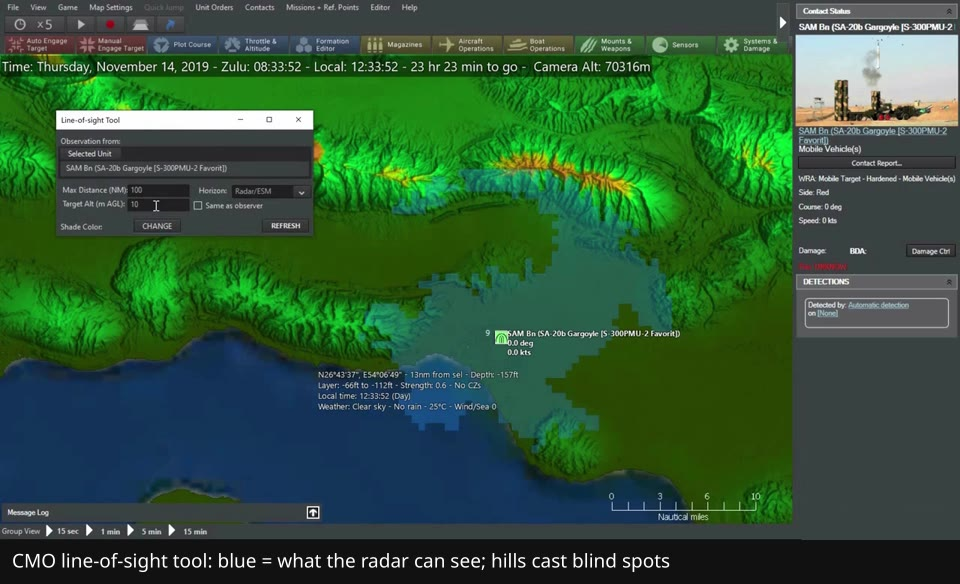
What to borrow: Fog that comes from sensors: you see only what your sensors report, as contacts with uncertainty areas that tighten as more sensors confirm them. Adds emissions control (stay quiet or radiate) and units that carry out assigned missions on their own. The model for 'fog = sensor coverage' and mission-level tasking.
What to look for: Watch the line-of-sight tool paint in blue what a ground radar can see at a chosen target altitude, with hills casting dark blind spots behind them. Earlier (from 4:50) the large circles are sensor range rings. This is the exact model for the Relay/Mast LOS preview and for 'fog = sensor coverage' in Countermeasure.
▶ Watch from 7:50: Command: Modern Operations - Showcasing Real-world Tactics/Review · Covert Cabal · Also: sensor range rings, from 4:50
Trailer (secondary): Command: Modern Operations || in 2 minutes · MatrixGames
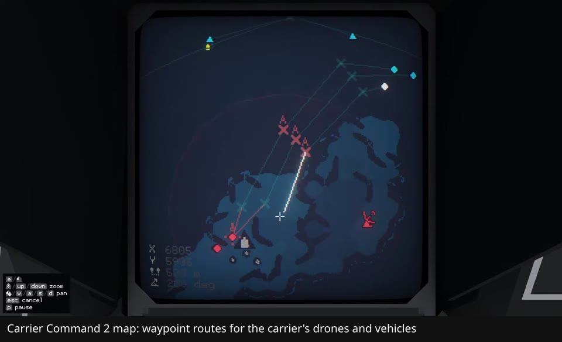
What to borrow: An open archipelago where one carrier commands air and amphibious drones by waypoint, far from home. The closest feel to an air-plus-ground roster on an open map.
What to look for: Watch the carrier's map screen: the player lays waypoint routes for air and amphibious drones, then releases them with go-codes (Alpha, Bravo). That is Countermeasure's command layer: plan on a map, release on a code, and the drones carry it out beyond your view.
▶ Watch from 23:49: Carrier Command 2 - Beginners Starting Guide (Walkthrough) · Atova
Trailer (secondary): Carrier Command 2 Release Trailer · MicroProse
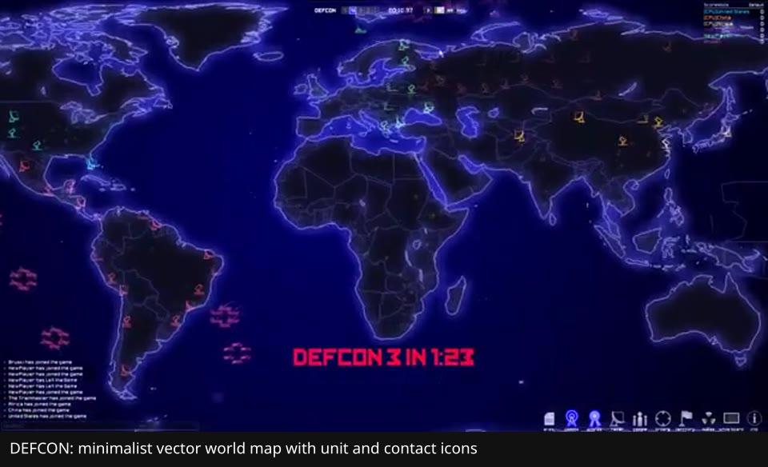
What to borrow: A minimalist, readable map: radar coverage drawn as circles, nothing visible outside them, and the dread of watching contacts appear. The visual-language target for a browser canvas.
What to look for: Watch the whole-world vector map: dark land outlines, neon unit and contact icons, a countdown, and almost nothing else. It's the readability target for a browser canvas: Countermeasure's fog and contacts should read this cleanly.
▶ Watch from 7:14: DEFCON | FFA Match between players and AI - Gameplay · Jdebruez987
Trailer (secondary): DEFCON trailer · GOG
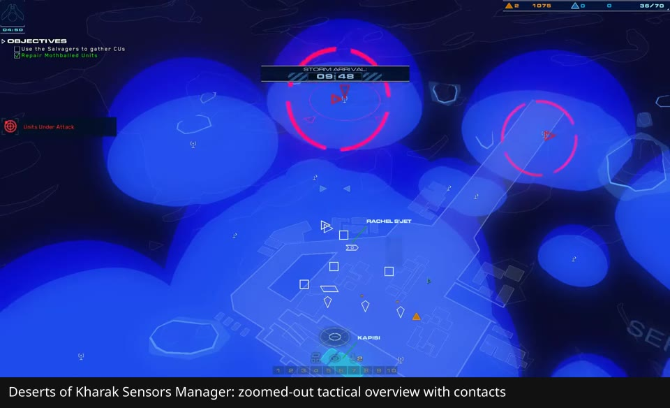
What to borrow: Open desert where dunes and height block line of sight, a Sensors Manager overview map, and a mobile carrier as the only base. The model for terrain line of sight and the strategic overview.
What to look for: Watch the Sensors Manager: the camera pulls out to a flat tactical overview where blue bubbles mark your sensor coverage and contacts appear as icons. This is Countermeasure's strategic zoom and the coverage-mask look for fog.
▶ Watch from 5:39: Homeworld: Deserts of Kharak Part 2 - Manager-ing Sensors · Only Mostly Here
Trailer (secondary): Homeworld: Deserts of Kharak Launch Trailer · Gearbox
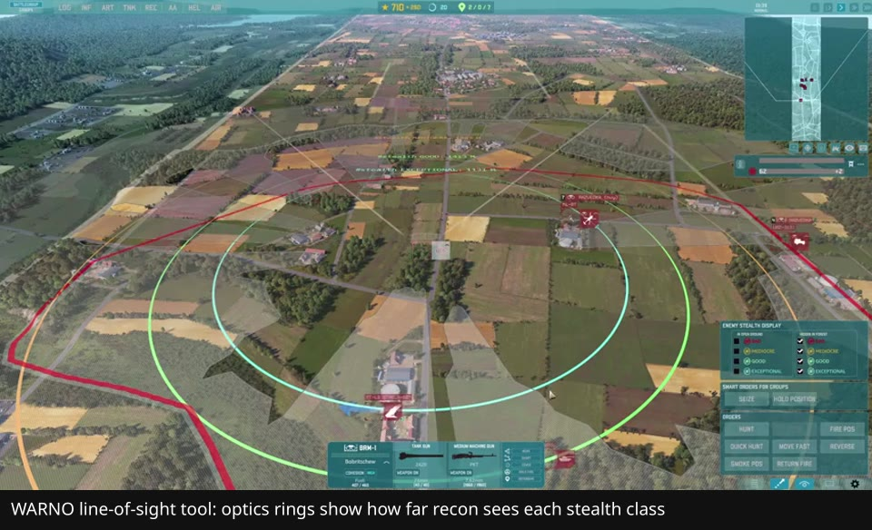
What to borrow: Recon units with distinct optics, fog that depends on spotting, a line-of-sight preview tool, and pre-battle decks. The model for the Relay/Mast LOS preview and for recon as its own role.
What to look for: Watch the line-of-sight tool on a recon unit: colored rings show how far its optics can spot targets of each stealth class (bad, mediocre, good, exceptional), and units with better optics get bigger rings. That's the model for recon as its own role and for a range preview that depends on target signature.
▶ Watch from 17:13: Basics you NEED to know in WARNO · Bandanner
Trailer (secondary): WARNO: Version 1.0 Official Launch Trailer! · Eugen Systems
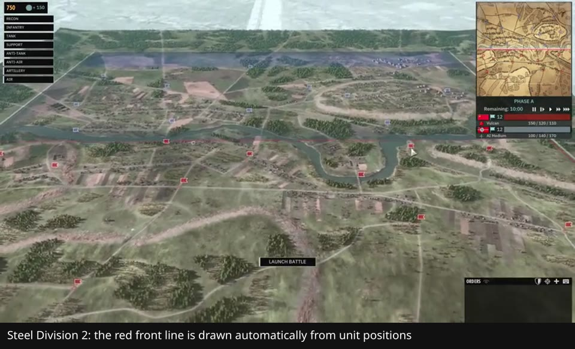
What to borrow: Battles run in phases where more and stronger units become available over time, with a front line drawn automatically from unit positions. The model for escalation inside a mission that mirrors the campaign's scale curve.
What to look for: Watch the red front line across the map (drawn from unit positions, pushed by moving units forward) and the 'Phase A, 10:00 remaining' panel at top right: stronger units unlock in later phases. That's the model for in-mission escalation and a front line that shows control without hard borders.
▶ Watch from 5:37: Steel Division 2 Tutorial - Basic Gameplay Mechanics (Comprehensive Guide) · VulcanHDGaming
Trailer (secondary): Steel Division 2 - Launch Trailer · Eugen Systems
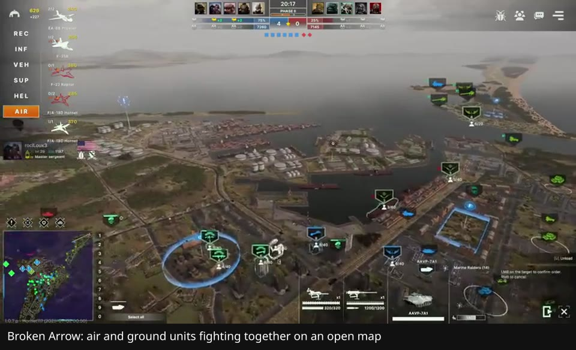
What to borrow: Modern joint air and ground forces on open maps, with recon and pre-battle decks. A model for the supply-budget loadout. Drones are in the decks (the clip shows an RQ-4 Global Hawk in the recon tab), but they're one unit type among many, not the focus.
What to look for: Watch helicopters, jets, and ground vehicles fight on one open, zoomed-out map with capture zones. At 1:31 the deck builder shows an RQ-4 Global Hawk in the recon tab, and the narrator says to always run recon drones. That's the model for a mixed air-plus-ground roster bought from a budget before the mission.
▶ Watch from 7:23: How to Play Broken Arrow: The Beginner's Guide · Hornet_GTS · Also: deck builder with a recon drone, from 1:31
Trailer (secondary): Broken Arrow | Release Trailer · SlitherineGames
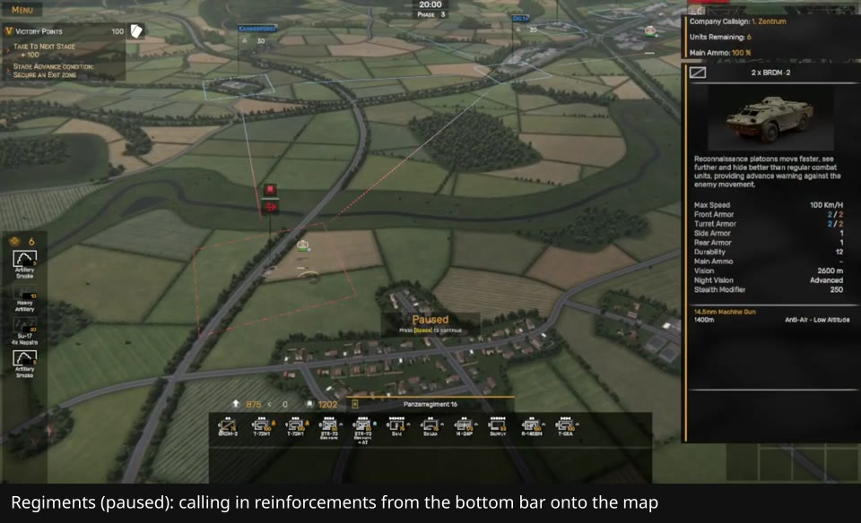
What to borrow: A Cold War RTS with no base building, where reinforcements are called in as the operation progresses and spotting matters. The model for 'no base, supply only'.
What to look for: Watch the game paused while the player calls reinforcements from the bottom bar onto the map. Each call costs reinforcement and supply points, and there's no base to build. That's Countermeasure's 'no base, supply only' loadout.
▶ Watch from 8:50: The Absolute Beginners Guide to REGIMENTS! | ALL GAS, NO BRAKES · Tactics With Joe
Trailer (secondary): Regiments - Official Launch Trailer · GameTrailers
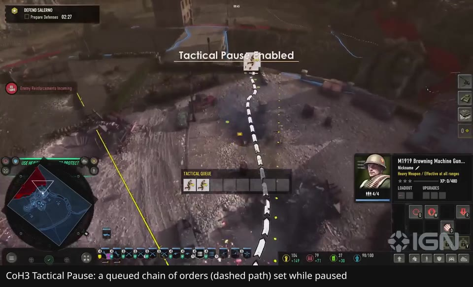
What to borrow: Full Tactical Pause (named on its Steam page), terrain cover, and line of sight. The model for real time with pause and for queuing orders while paused.
What to look for: Watch 'Tactical Pause Enabled': the game freezes, the player chains orders into the Tactical Queue, a dashed path shows the plan, and everything runs on unpause. That's Countermeasure's real time with pause and queued orders.
▶ Watch from 0:18: Company of Heroes 3: How to Master Tactical Pause - IGN First · IGN
Trailer (secondary): Company of Heroes 3 - Game Trailer · Company of Heroes
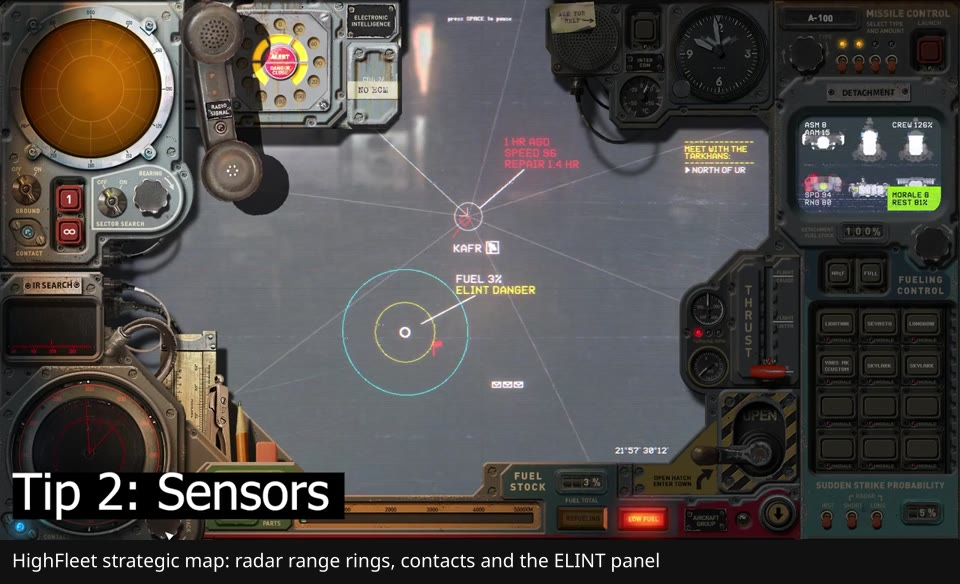
What to borrow: A strategic map where your radar emissions reveal you, and where intercepted signals and recon find the enemy. The model for the signature mechanic and for bearing-line contacts.
What to look for: Ignore the trailer's side-view combat. Watch the strategic map in 'Tip 2: Sensors': radar range rings, contacts, and the ELINT panel. The narrator explains that ELINT picks up enemy radar from about 1,500 km as a bearing flash, and that you run your own radar off because switching it on reveals you. That is Countermeasure's emissions and signature mechanic.
▶ Watch from 6:12: Highfleet Tutorial - Advanced Strategy Guide · Atova
Trailer (secondary): HighFleet Launch Trailer by MicroProse · MicroProse
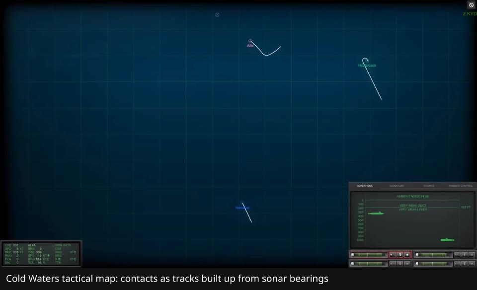
What to borrow: Contacts start as uncertain sensor tracks that you must classify, and they go stale. The model for last-known-position ghosts and their growing uncertainty circles.
What to look for: Watch the dark-blue tactical plot: no terrain art, just your sub and contact tracks built up from sonar, with a sensor readout panel. The narrator is talking through target motion analysis (working out a contact's course from bearings). That's the look for Countermeasure's last-known-position ghosts and uncertain contacts.
▶ Watch from 17:13: Cold Waters Tutorial: Essentials And Basics of Submarine Warfare. · RAMJB - Strategy & Simulation Gaming
Trailer (secondary): Cold Waters - New Submarine Simulation · Killerfish Games
What to borrow: Per-unit vision and line of sight, with optional direct control. This is the micro end of the spectrum: where Chapter 1 starts, and what the campaign deliberately leaves behind.
Trailer: Men of War II | Launch Trailer · Fulqrum Publishing (no gameplay clip in this pass)
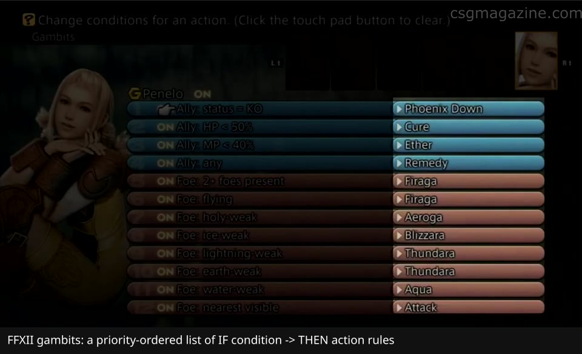
What to borrow: Gambits: priority-ordered if-then rules unlocked over time. The model for the behavior-rule slots.
What to look for: Watch the gambit screen: a priority-ordered list where each row is a condition (left) and an action (right), toggled on or off. Countermeasure's behavior-rule slots on each role card work the same way.
▶ Watch from 2:55: Beginner's Guide To Gambits: Final Fantasy XII The Zodiac Age · Final Fantasy Union
Trailer (secondary): FINAL FANTASY XII THE ZODIAC AGE Gambit System Trailer · Square Enix
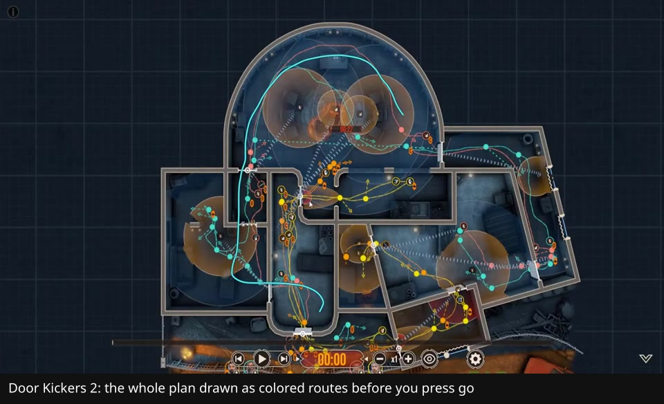
What to borrow: Free-form routes with go-codes, in real time with pause. The model for planning UX and command tokens.
What to look for: Watch the planning view: every trooper's route is drawn as a colored line through the building, with waypoints and actions, before anything moves. That's the planning UX for Countermeasure's routes and go-codes.
▶ Watch from 3:11: How to do perfect single plan runs in Door Kickers 2 · Ronin Fox Gaming
Trailer (secondary): Door Kickers 2 - Full Release Date Announcement Trailer · KillHouse Games
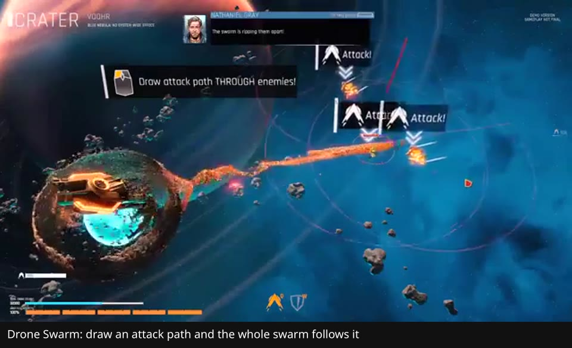
What to borrow: Swarm-level orders instead of piloting single drones. A reference for how Chapter 6 should feel once counts reach the hundreds.
What to look for: Watch the player draw one attack path and the whole swarm of thousands of drones flow along it. That's how Countermeasure should feel in Chapter 6: you shape the swarm with one stroke instead of steering drones.
▶ Watch from 3:22: Drone Swarm - Sci Fi Tactical Real Time Defense /w 32,000 Drones! · Splattercatgaming
Trailer (secondary): Drone Swarm – Launch Trailer · astragon
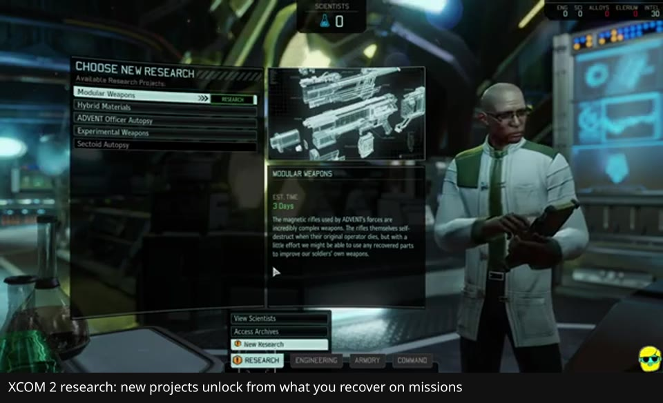
What to borrow: Research unlocks earned through missions, including tech that only appears after you meet a new enemy type. The model for 'necessity unlocks'.
What to look for: Watch the 'Choose New Research' screen: projects such as ADVENT Officer Autopsy and Hybrid Materials appear because of what you recovered on missions, and some cost enemy corpses. That's Countermeasure's Lessons-to-tech unlock loop.
▶ Watch from 6:21: XCOM 2: War of the Chosen | 2023 Guide for Complete Beginners | Episode 3 | Research, Engineering · Dr. Incompetent
Trailer (secondary): Official XCOM 2 Launch Trailer · 2K United Kingdom
What to borrow: Set the loadout and orders, then watch. The 'commit and watch' moment, which becomes the main mode in late chapters.
Trailer: Gratuitous Space Battles 2 Release Trailer · Positech Games (no gameplay clip in this pass)
What to borrow: Commanding drones through unreliable systems, where losses hurt. The mood reference for degraded comms.
Trailer: Duskers - Launch Trailer · GameSpot Trailers (no gameplay clip in this pass)
clips/<game>.jpg embedded in the HTML. Trailers are kept as secondary links. HighFleet stays in the main list because a strong strategic-map sensors clip was found. Broken Arrow's drone caveat was corrected.